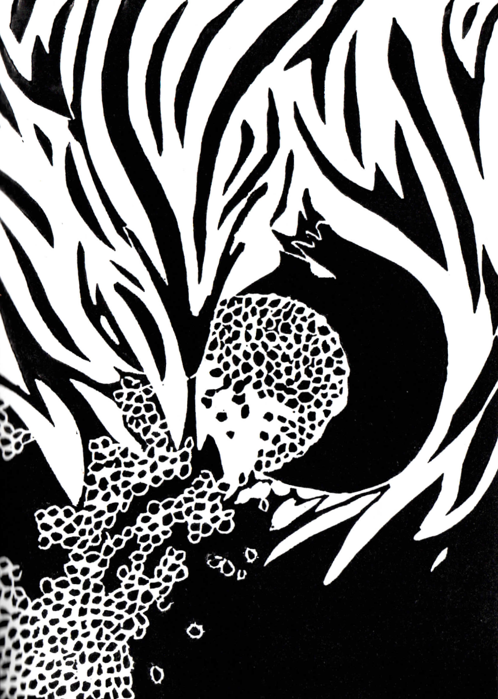

Il est tombé à la renverse, ils ont détruit ses étals à coups de pied, ils l’ont poussé dans la boue ; le chariot, les légumes, les fruits et lui avec, et on ne sait pas comment, ni ce qu’il s’est passé, si c’est la façon de rouler des oranges ou les blettes formant un tapis touffu ou l’arc de bananes qui l’a couronné, lui, enfoncé dans la boue, le chariot gisant à côté comme une baleine morte, ou bien si c’est le chant du chariot avant de tomber, il paraît qu’il a grincé fort, car tout ça est arrivé loin de chez nous, en Afrique du Nord, mais là-bas aussi il y en a qui ne graissent jamais les essieux de leur chariot, et donc on ne sait pas si c’est le chant du chariot ou les variations de son cri arabique – qui nous semblerait sûrement mélodieux à nous, infidèles, mais il ne serait pas réaliste de penser qu’il puisse s’agir de quelque chose de très différent d’un putain de sa mère fils de pute dit dans la version de cette langue flexionnelle et terroriste –, parce qu’il a juré dans la langue ancienne des siens, ou bien si c’est le signe, l’arabesque, dessinée dans son dérapage, ou la parabole de la chute des mandarines ou le rayon de soleil qui a illuminé les haricots pile au moment où ils se répandaient dans la boue comme s’ils s’étaient refusés à terminer en salade et s’en étaient remis à leur destin naturel de graines en un jet de lances légères cédant, heureux, à cette force, cette gravité, qui les a libérés du saladier où ils auraient dû finir. Nous ne savons pas et il est fort probable que nous ne sachions jamais ce qui l’a placé dans l’œil de Dieu mais le pauvre Mohamed Bouazizi s’est retrouvé là, et on sait bien, on l’a toujours su, et là-bas au Moyen-Orient plus que partout ailleurs, que les dieux, mieux vaut ne pas être dans leur ligne de mire, mieux vaut les tenir éloignés le plus loin possible et déposer des offrandes sous leurs yeux, les brûler pour eux, les réduire en fumée, pour leur brouiller la vue avec ce qu’ils aiment. Les formes difformes de ce que l’on brûle, de ce qui s’élève en fumée, se meut, change constamment et laisse un dépôt de cendres : c’est cela qu’ils aiment, les dieux. Et c’est pourquoi nous ne sommes que poussière animée et un jour nous deviendrons poussière inerte, l’espace d’un instant, avant que tout ce que nous avons été ne s’élève encore une dernière fois, sous une forme nouvelle que l’on ignore. Avec ces offrandes sous le nez on veut distraire les divinités de la tragédie du monde comme si l’on pouvait la faire cesser, et arrêter, pour un instant de paix, tout ce qui est, naît et meurt et naît et meurt avec la violence de l’amour et de la haine de Dieu. Voilà pourquoi l’Ombre Noire disait toujours « malheur aux regardés, malheur aux élus » ici dans les barres d’immeubles où elle est devenue impératrice avant de se jeter par terre, sur ce sol boueux lui-aussi et brûlé lui-aussi, avec les ordures de la décharge qu’avait été cette terre avant de devenir un quartier, les ordures en combustion sous cette boue, la boue de l’enfer, comme le sol où Dieu a eu Mohamed dans son œil, dans cet œil d’éternité qu’est l’œil de Dieu qui ressemble à l’œil d’un cyclone. Cet œil, c’est sa partie tranquille, le reste déchaîne sa furie créatrice et détruit et construit de violentes constellations sans répit, et le centre de cela, de l’univers de Dieu qui est Son œil qui reste calme, Il est là, c’est ce calme sourd et aveugle qui brûle, c’est ce qui fait naître et mourir. C’est pourquoi la Noire priait ainsi : « Au feu, le bois, à Dieu, la bougie et à l’agneau, la flamme qui flagelle et qui brûle. C’est ainsi que ce qui est à Dieu à Dieu revient. L’odeur de la chair vient à lui, et vient à lui la fumée qui élève les désirs des vivants, en brûlant, brûlant, brûlant, brûlant. Et à la Terre, Dieu le veut ainsi, ce qui reste sur la Terre. Oh Seigneur tu m’arraches. Il reste des os. Et il reste des anneaux. Il reste les dents qui tombent dans le grincement des dents. Et des cendres, il reste des cendres. Oh Seigneur, tu m’arraches. Accepte-les, mon Dieu, brûlant, Amen. »
Et Mohamed aurait pu implorer la même chose que la Noire à quelques détails près, après tout leur Jéhova des armées est le même, mais il n’est même pas parvenu à prier : les flics corrompus de là-bas, qui sont les mêmes que ceux d’ici, ont fait voler son chariot avec tous les fruits et légumes qu’il avait achetés au marché tôt ce matin-là et qui étaient très chers et représentaient presque tout l’argent qui là-bas s’appelle dinar qu’ils avaient en tout et pour tout lui et sa famille. Ils ont retourné son chariot, lui ont mis deux claques, lui ont craché dessus, ont frappé à coups de pieds sa tête pleine de boue et constellée de cette salive qui, au soleil, a brillé comme des diamants et c’est peut-être ça qui l’a placé dans l’œil de Dieu, parce que les crachats l’ont rendu fou et le pauvre Mohamed n’a jamais pu redevenir lui-même, il s’est dégagé, il est rentré chez lui, il a saisi le bidon d’essence qu’ils avaient acheté avec sa femme comme ils s’étaient passés la bague au doigt l’un à l’autre : comme le symbole d’un projet, comme les enfants, les nouvelles chambres de la maison, comme vieillir ensemble, et comme les alliances, le bidon était le symbole de la prospérité, de la F100 qu’ils allaient acheter pour transporter plus de légumes dans dix ans à ce qu’ils calculaient, car comme tous les commerçants ils croyaient en une abondance qui prospérait pièce par pièce et selon les comptes, dans trois mille six cent soixante-cinq jours, à force d’empiler des pièces gagnées sur le chemin fait chaque matin de la maison au marché, du marché à la place et scandé par le chant des promotions de la voix mélodieuse de Mohamed, ils auraient une F100 d’occasion mais en bon état et, c’est bien connu, la prospérité profite bien mieux à ceux qui ne la tractent pas avec du sang mais avec de l’essence. Et tout le monde sait aussi que l’essence n’est pas seulement un combustible de riches mais qu’elle peut aussi être un combustible de bonzes, ce qui est peut-être une autre forme de richesse, encore que nous ne sachions en quelle richesse les bonzes transforment l’essence car ils ne reviennent jamais pour le raconter et c’est à peine s’il nous reste leurs cendres pour les enterrer le plus près possible de leurs ancêtres. Mohamed est donc parti se plaindre au commissariat pour les dégradations dont il avait été victime, ses papiers en poche et le bidon d’essence à la main, et il a passé cinq heures bien assis sur sa chaise au commissariat, se rapprochant à chaque instant du centre de l’œil de Dieu, jusqu’à ce qu’ils le reçoivent. Et ça a été la goutte d’eau : ils l’ont envoyé au kilomètre zéro de la fureur divine quand ils lui ont ri au nez et lui ont dit d’arrêter de faire chier, qu’un vendeur sans papiers n’a pas à se plaindre de quoi que ce soit et qu’il commence par payer les péages qu’il savait très bien qu’il fallait qu’il paye pour ne pas avoir de problèmes et qu’il rentre chez lui avant qu’ils ne changent d’avis et lui fassent sa fête et le foutent en taule par dessus le marché. Mohamed est resté immobile un instant, sûrement l’instant pendant lequel il a brûlé dans l’œil de Dieu, un instant qui a dû lui sembler très long et qui a ensuite semblé long aux flics quand ils se sont mis à réfléchir à comment tout cela avait commencé. Car il brûlait déjà quand il a ouvert le bidon et s’est aspergé d’essence et l’a rendue combustible de sa propre combustion. Mohamed a pris feu dans une petite explosion et tous les flics qui s’étaient foutus de sa gueule sont partis en courant, et le feu lui a d’abord brûlé les cheveux et les vêtements et puis le corps tout entier car il faut voir la quantité d’essence que peuvent contenir ces bidons, ceux qu’on pouvait porter à la main quand on allait réclamer justice à Tunis – ils doivent certainement être interdits maintenant dans tous les lieux publics du monde entier –. Et c’est comme ça qu’avec le feu jusqu’aux glaouis il a couru lui aussi, pas comme courent les fonctionnaires et les policiers corrompus surpris par un bonze, mais plutôt comme les bonzes pendant les premières secondes de leur combustion qui durent seulement le temps de la course, car ensuite on les éteint, et on les emmène à l’hôpital et c’est fini. Il a donc entrepris sa dernière course comme tous ses ex-collègues – cette corporation a rarement plus d’un membre en même temps –, avec maladresse, en secouant les bras et en hurlant car il n’y en a pas d’autres comme Thích Quảng Đức, ce moine bouddhiste qui n’a pas crié et qui est resté dans la position du lotus pendant qu’il brûlait vif. Tous les autres avancent sur quelques mètres, en flammes, jusqu’à ce qu’ils tombent, inertes, alors il n’y a plus que le feu qui bouge car onduler est dans sa nature et c’est en général à ce moment-là qu’on les éteint en les enveloppant dans une couverture, ou peut-être, là-bas, dans un tapis qui n’a rien de magique car le voyage se termine ensuite dans l’hôpital le plus proche, où la seule merveille qui les attend c’est celle de la mort, à moins que dans la région on considère aussi comme un miracle l’inversion d’un protocole millénaire car Mohamed a été momie avant d’être cadavre dans cet hôpital où Ben Ali est venu lui rendre visite pour tenter d’éteindre le feu qui finirait par le brûler lui aussi après vingt-cinq ans passés à être L’Illuminé, Le Père du Peuple, La Lumière de Tunis. Mais l’œil de Dieu l’avait dans la même ligne de mire que ce pauvre marchand de légumes devenu momie et, tout bien considéré, il est possible que Mohamed ait été son agneau, l’offrande du peuple à son Seigneur, la victime propitiatoire, la mèche de l’explosion que bien souvent l’histoire réclame au feu pour s’enflammer. Et cet instant qui a duré une éternité au commissariat, quand Mohamed était au kilomètre zéro de l’œil divin et a, semble-t-il, décidé de son destin et de celui de son pays, c’est précisément l’instant où Dieu a accepté l’offrande. Et Mohamed a agonisé pendant quinze jours, comme la Terre meurt pendant des mois avant de devenir printemps : le peuple s’est soulevé contre la tyrannie, il y a eu d’autres morts et encore quinze jours plus tard, Ben Ali est tombé.
Et kaput Mohamed, lui qui après avoir inversé la chronologie habituelle où se succèdent cadavre et momie, a acquis une renommée qui parvient jusqu’à nos yeux et a été le symbole d’une révolution.

Autrice : Gabriela Cabezón Cámara
Traductions :
Gravures : Citlali
Edition : Marie Audran
Première édition : 2019, Rennes
Deuxième édition (20 exemplaires numérotés) : 2021, Rennes
Imprimé à Copie des Lices, Rennes
Adaptation numérique : Laura Wujek
Hébergé par netlify
Contact La Liebre Dorada : laliebredorada@gmail.com
Site internet : www.laliebreeditions.wordpress.com